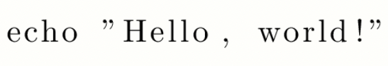
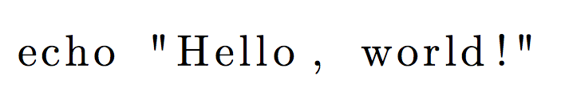

记录在latex写作过程中遇到的问题。
【问题一】 如何在列表中打印直引号？
参考链接：How can I get straight double quotes in listings?
问题描述：
在latex的lstlisting代码块中，如果想要在其中输入双引号，如下所示
1 | \usepackage{listings} |
得到的大概是如下的效果。两个引号都是向下弯的双引号。我希望能够将双引号替换成直引号。

解决方法：添加下述package并将lstlisting中的upquote设置为true
1 | \usepackage[T1]{fontenc} |
生成图片如下所示

【问题二】使用lstdefinelanguage
参考链接
【问题三】Package hyperref Warning
参考链接：https://tex.stackexchange.com/questions/10555/hyperref-warning-token-not-allowed-in-a-pdf-string
当我在标题处使用数学公式时，例如
1 | \subsubsection{Evaluating the Model for $k_c$ and $m_c$} |
产生了如下错误
1 | Package hyperref Warning: Token not allowed in a PDF string (Unicode): removing `subscript' on input line 284. |
在网上搜索，查到了如上参考链接。为数学公式添加\texorpdfstring即可解决问题
1 | \subsubsection{Evaluating the Model for \texorpdfstring{$k_c$ and $m_c$}{}} |
【问题四】数学公式多处对齐
参考链接：Multiple alignment
在数学公式中实现多处对齐，此时\begin{align}环境无法满足要求。因此使用amsmath包中的alignat环境。如下所示
\[ \begin{alignat*}{3} &[x \mapsto s]x &&= s && \\ &[x \mapsto s]y &&= y \qquad &&\text{als } y\neq x \\ &[x \mapsto s](\lambda(y)t_1) &&= \lambda(y)[x \mapsto s]t_1 \qquad &&\text{als } y \neq x \text{ en } y \not \in FV(s) \\ &[x \mapsto s](t_1 \; t_2)&&= ([x \mapsto s]t_1)\;([x \mapsto s]t_2) && \end{alignat*} \]